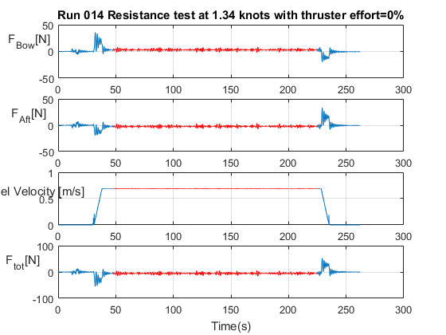
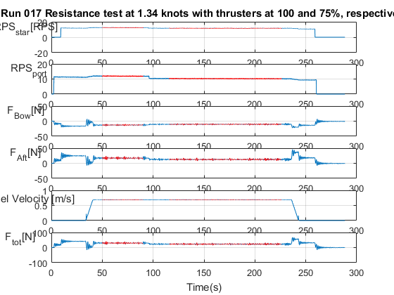

Contents
- ALL CALCULATED VALUES ARE STEADY STATE VALUES.
- Run 001 - Port Thruster 25% effort
- Run 002 - Port Thruster 50% effort
- Run 003 - Port Thruster 75% effort
- Run 004 - Port Thruster 100% effort
- Run 005 - Port Thruster effort=100% angle=0,30,60,90º
- RUN 006 - Starboard Thruster effort=100%
- RUN 007 Starboard Thruster effort=100% at angle=270º
- RUN 008 - Bow Thruster effort=25,50,75,100% angle=0º
- RUN 009 - Bow Thruster effort=100% angle=0,30,60,90,120,150º
- RUN 010 - Bow Thruster effort=100% angle=330,300,270,240,210,180
- Run 011 - NEXT ONE IS NEWER - Resistance test at 0.5 knots with thruster(mounted) effort=0%
- Run 012 - Resistance test at 0.5 knots with thruster(mounted) effort=0%
- Run 013 - Resistance test at 1 knots with thrusters(mounted) effort=0%
- Run 014 - Resistance test at 1.34 knots with thrusters(mounted) effort=0%
- Run 015 - Resistance test at 3 knots with thrusters(mounted) effort=0%
- Run 016 - Resistance test at 4 knots with thrusters(mounted) effort=0%
- Run 017 Resistance test at 1.34 knots with thruster effort=100,75%
- Run 018 Resistance test at 1.34 knots with thruster effort=50,25%
- Run 019 Resistance test at 1 knots with thruster effort=100,75%
- Run 022 Resistance test at 1 knots with thruster effort=50,25%
- Run 020 Resistance test at 3 knots with thruster effort=100%
- Run 021 Resistance test at 3 knots with thruster effort=75%
- Run 023 Resistance test at 3 knots with thruster effort=100,75,50,25%
- RUN 24-26 NONE
- RUN 027 Resistance test at 3 knots with thrusters UNMOUNTED
- RUN 028 Resistance test at 4 knots with thrusters UNMOUNTED
ALL CALCULATED VALUES ARE STEADY STATE VALUES.
RED COLOR INDICATES WHERE VALUES ARE RETRIEVED FROM
Script contains 25 sections, each containing one run. A run is just a continuous test. To save time during testing, some runs contain several tests, e.g RUN005 port thruster angle=0,30,60,90º and calculates 4 values for mean, variance, min and max.
main.m depends on two quite similar functions. filter_data() returns values from runs that contain only one test. filter_data_joined() returns values from runs that contain several tests. Sample frequency used is 200Hz.
Use "Run Section" for each section. Mean, variance, min and max values are displayed in the console. For runs with only one test(e.g port thruster=25%) there will be only one mean value. For runs containing several tests there will be several means etc.
You can add and remove data from plots by adding/removing e.g 'sideforce_ap' to the display_data cell array
Note: Force Total = (Force Aft - Force Bow)
clear all;close all;
Run 001 - Port Thruster 25% effort
clc title = 'Run 001 - Port Thruster 25% effort'; disp(title) disp(' ') load('num25-run001-PT.mat') display_data = {'time', 'force_bow', 'force_aft', 'rps_port', ... 'sideforce_ap', 'sideforce_fp'}; %boundaries are lower and upper sample number for a steady-state period fs=200; % Hz boundaries =[40 105]*fs; %[t1 t2]*fs % returns the mean, variance, max and min values of the selected data in % num25 specified by the active set and boundaries. filter_data(num25, display_data, title, boundaries);
Run 001 - Port Thruster 25% effort
'F_{sideFP}[N]'
Mean value: -0.179625
Variance: 0.007032
Max: 0.714222
Min: -1.161919
'F_{sideAP}[N]'
Mean value: -0.025240
Variance: 0.011541
Max: 1.787384
Min: -1.677095
'RPS_{port}'
Mean value: 3.770719
Variance: 0.004994
Max: 4.006588
Min: 3.536623
'F_{Bow}[N]'
Mean value: -1.031830
Variance: 0.001567
Max: -0.919750
Min: -1.149750
'F_{Aft}[N]'
Mean value: 1.063429
Variance: 0.002354
Max: 1.218965
Min: 0.922804
'F_tot [N] (F_aft-F_bow)'
Mean value: 2.095259
Variance: 0.007372
Max: 2.368416
Min: 1.842827
Run 002 - Port Thruster 50% effort
clc title = 'Run 002 - Port Thruster 50% effort'; disp(title) disp(' ') load('num50-run002-PT.mat') display_data = {'time', 'force_bow', 'force_aft', 'rps_port' , ... 'sideforce_ap', 'sideforce_fp'}; boundaries =[8000 21000]; filter_data(num50, display_data, title, boundaries);
Run 002 - Port Thruster 50% effort
'F_{sideFP}[N]'
Mean value: -0.549732
Variance: 0.025343
Max: -0.093181
Min: -1.053398
'F_{sideAP}[N]'
Mean value: -0.072300
Variance: 0.014202
Max: 0.777895
Min: -1.046432
'RPS_{port}'
Mean value: 6.926967
Variance: 0.006869
Max: 7.238001
Min: 6.613867
'F_{Bow}[N]'
Mean value: -3.305037
Variance: 0.003438
Max: -3.105948
Min: -3.482394
'F_{Aft}[N]'
Mean value: 3.686637
Variance: 0.004694
Max: 3.907324
Min: 3.461991
'F_tot [N] (F_aft-F_bow)'
Mean value: 6.991675
Variance: 0.015891
Max: 7.384536
Min: 6.570036
Run 003 - Port Thruster 75% effort
clc title = 'Run 003 - Port Thruster 75% effort'; disp(title) disp(' ') load('num75-run003-PT.mat') display_data = {'time', 'force_bow', 'force_aft', 'rps_port', ... 'sideforce_ap', 'sideforce_fp'}; boundaries = [8000 21000]; filter_data(num75, display_data, title, boundaries);
Run 003 - Port Thruster 75% effort
'F_{sideFP}[N]'
Mean value: -1.027997
Variance: 0.067493
Max: -0.260834
Min: -1.795069
'F_{sideAP}[N]'
Mean value: -0.090793
Variance: 0.035095
Max: 0.506626
Min: -0.945053
'RPS_{port}'
Mean value: 9.602590
Variance: 0.010844
Max: 9.981113
Min: 9.284322
'F_{Bow}[N]'
Mean value: -6.242944
Variance: 0.013989
Max: -5.883318
Min: -6.609256
'F_{Aft}[N]'
Mean value: 7.329696
Variance: 0.024166
Max: 7.791782
Min: 6.884754
'F_tot [N] (F_aft-F_bow)'
Mean value: 13.572640
Variance: 0.074295
Max: 14.400438
Min: 12.778254
Run 004 - Port Thruster 100% effort
clc title = 'Run 004 - Port Thruster 100% effort'; disp(title) disp(' ') load('num100-run004-PT.mat') display_data = {'time', 'force_bow', 'force_aft', 'rps_port', ... 'sideforce_ap', 'sideforce_fp'}; boundaries = [8000 21000]; filter_data(num100, display_data, title, boundaries);
Run 004 - Port Thruster 100% effort
'F_{sideFP}[N]'
Mean value: -1.360171
Variance: 0.080818
Max: -0.497088
Min: -2.162194
'F_{sideAP}[N]'
Mean value: -0.076435
Variance: 0.059194
Max: 0.814121
Min: -0.667784
'RPS_{port}'
Mean value: 11.044530
Variance: 0.014274
Max: 11.500520
Min: 10.705328
'F_{Bow}[N]'
Mean value: -8.332575
Variance: 0.014540
Max: -7.913787
Min: -8.749034
'F_{Aft}[N]'
Mean value: 9.752919
Variance: 0.028349
Max: 10.316788
Min: 9.217773
'F_tot [N] (F_aft-F_bow)'
Mean value: 18.085494
Variance: 0.082702
Max: 19.065223
Min: 17.132159
Run 005 - Port Thruster effort=100% angle=0,30,60,90º
title = 'Run 005 - Port Thruster 100% effort at 0,30,60,90º'; disp(title) disp(' ') load 'num-run005-0-30-60-90-deg.mat'; display_data = {'time', 'force_bow', 'force_aft','sideforce_ap', ... 'sideforce_fp', 'rps_port'}; fs=200; % starting points and stop points for multiple steady states boundaries = {[12 48]*fs,[76 113]*fs,[136 176]*fs,[203 240]*fs}; filter_data_joined(num,display_data, title, boundaries);
Run 005 - Port Thruster 100% effort at 0,30,60,90º
F_{sideFP}[N]
Mean: -1.338934 -2.303268 -2.779349 -2.719018
Variance: 0.320877 2.235070 2.482270 0.153812
Max: -0.000592 1.871771 0.942873 -1.725331
Min: -2.554857 -5.779917 -7.222108 -3.836359
F_{sideAP}[N]
Mean: -0.084996 -7.164886 -12.988836 -15.625651
Variance: 0.086452 0.435895 0.493320 0.045954
Max: 0.749326 -5.295836 -11.356043 -14.748832
Min: -0.804672 -8.867694 -16.389476 -16.350967
RPS_{port}
Mean: 11.046712 11.289256 10.980959 10.762547
Variance: 0.015560 0.015449 0.028507 0.014778
Max: 11.462405 11.774498 11.611398 11.210230
Min: 10.734249 10.946313 10.601516 10.421080
F_{Bow}[N]
Mean: -8.414880 -7.637176 -4.508101 -0.455068
Variance: 0.142400 0.016222 0.038525 0.010155
Max: -7.246547 -7.314529 -4.010076 -0.152185
Min: -9.704373 -7.982667 -5.267289 -0.780493
F_{Aft}[N]
Mean: 9.508528 8.689563 4.245307 -0.542055
Variance: 0.261706 0.026421 0.060911 0.012684
Max: 11.302083 9.069693 5.143784 -0.168575
Min: 7.927590 8.247477 3.656705 -0.879525
F_tot [N] F_aft-F_bow
Means: 17.923407 16.326739 8.753409 -0.086987
Variances: 0.790011 0.082396 0.192225 0.045160
Maxes: 21.004659 17.050451 10.410175 0.611372
Minima: 15.174138 15.562279 7.745736 -0.725704
RUN 006 - Starboard Thruster effort=100%
angle = 0,30,60,90,120,150,180,210,240º
clc title= 'Run 006 - Starboard Thruster 100% effort at 0-240º inc=30º'; disp(title) disp('Order: 0, 30, 60, 90, 120, 150, 180, 210, 240º') disp(' ') load 'num-run-006-0-240-deg.mat' display_data = {'time', 'force_bow', 'force_aft','sideforce_ap', ... 'sideforce_fp', 'rps_star'}; fs=200; % Boundaries are in 'sample number' % sample number = seconds * sample frequency boundaries = {[16 59]*fs,[91 137]*fs,[157 185]*fs,[207 232]*fs, ... [260 289]*fs, [314 352]*fs, [368 394]*fs, [407 436]*fs, [489 569]*fs}; filter_data_joined(num0_240, display_data, title,boundaries);
Run 006 - Starboard Thruster 100% effort at 0-240º inc=30º
Order: 0, 30, 60, 90, 120, 150, 180, 210, 240º
F_{sideFP}[N]
Mean: 1.337343 -0.384025 -1.717088 -2.232670 -2.836831 -2.112332 -1.953482 -0.793652 1.429348
Variance: 0.140665 2.027450 3.838882 1.249442 3.630016 0.625777 7.744311 26.350256 0.423611
Max: 2.584172 3.505059 2.828346 0.075701 0.444238 -0.397716 3.702437 9.839920 3.767577
Min: 0.399400 -4.635842 -5.805727 -5.549400 -6.324756 -4.058638 -8.608764 -10.859860 -0.323243
F_{sideAP}[N]
Mean: -1.285261 -10.325054 -15.708439 -12.748332 -12.841609 -6.689006 0.171758 7.679885 14.179703
Variance: 0.103517 0.483272 0.984771 0.682822 0.967887 0.217292 1.426406 4.780218 0.117518
Max: -0.363110 -8.032796 -12.319590 -10.700484 -10.130497 -5.547447 3.397759 13.519344 15.599223
Min: -2.327146 -12.408924 -18.344960 -15.180587 -15.424989 -8.339619 -2.432824 3.010379 13.082036
RPS_{star}[RPS]
Mean: 11.562668 11.378608 11.306171 11.247205 11.173170 11.155962 11.127753 11.111954 10.960533
Variance: 0.008887 0.007669 0.008519 0.010832 0.007700 0.009999 0.009890 0.012114 0.008257
Max: 11.873567 11.617209 11.533893 11.509664 11.379267 11.396682 11.375914 11.387705 11.158957
Min: 11.256876 11.104792 11.097680 10.980399 10.956900 10.884076 10.845108 10.799245 10.639833
F_{Bow}[N]
Mean: -10.042823 -8.719167 -5.094076 -1.219793 4.064620 6.841420 7.713469 7.513831 4.246905
Variance: 0.115390 0.044863 0.164753 0.247058 0.065987 0.087574 0.036848 0.099618 0.010994
Max: -9.115297 -8.184217 -3.885792 -0.106964 4.912307 7.554312 8.055640 8.323075 4.546044
Min: -11.181404 -9.297081 -6.260961 -2.318318 3.201682 6.088661 7.191643 6.808310 3.964755
F_{Aft}[N]
Mean: 10.698541 8.791022 3.534049 -1.226818 -6.268793 -8.842529 -9.852649 -9.680326 -6.811693
Variance: 0.232925 0.082900 0.254980 0.314985 0.063115 0.070797 0.028248 0.057700 0.009660
Max: 12.353647 9.584293 4.988613 0.064318 -5.484206 -8.100024 -9.398934 -9.107681 -6.543950
Min: 9.381398 8.046491 2.116448 -2.476505 -7.041370 -9.461657 -10.159790 -10.372502 -7.108729
F_tot [N] F_aft-F_bow
Means: 20.741363 17.510189 8.628126 -0.007024 -10.333412 -15.683950 -17.566119 -17.194157 -11.058598
Variances: 0.676030 0.248726 0.822806 1.118840 0.251427 0.314751 0.128415 0.299631 0.040679
Maxes: 23.534452 18.881375 11.248210 2.380727 -8.689128 -14.190594 -16.592074 -15.942989 -10.510202
Minima: 18.498792 16.232098 6.003658 -2.367087 -11.947763 -17.015070 -18.210249 -18.685488 -11.637484
RUN 007 Starboard Thruster effort=100% at angle=270º
clc title= 'Run 007 - Starboard Thruster 100% effort at 270º'; disp(title) disp(' ') load 'num-run-007-270-deg.mat' display_data = {'time', 'force_bow', 'force_aft','sideforce_ap', ... 'sideforce_fp', 'rps_star'}; fs=200; boundaries = [102*fs 170*fs]; filter_data(num270, display_data, title, boundaries);
Run 007 - Starboard Thruster 100% effort at 270º
'F_{sideFP}[N]'
Mean value: 2.714466
Variance: 0.930647
Max: 5.004788
Min: 0.362664
'F_{sideAP}[N]'
Mean value: 16.339723
Variance: 0.192587
Max: 17.719716
Min: 14.980292
'RPS_{star}'
Mean value: 10.820581
Variance: 0.010997
Max: 11.077588
Min: 10.454109
'F_{Bow}[N]'
Mean value: 0.291800
Variance: 0.016990
Max: 0.738466
Min: -0.080011
'F_{Aft}[N]'
Mean value: -0.156783
Variance: 0.019276
Max: 0.258759
Min: -0.602454
'F_tot [N] (F_aft-F_bow)'
Mean value: -0.448583
Variance: 0.070890
Max: 0.337000
Min: -1.339123
RUN 008 - Bow Thruster effort=25,50,75,100% angle=0º
clc title = 'Run 008 - Bow Thruster at 25, 50, 75 and 100% effort'; disp(title) disp('Order: 25%, 50%, 75% then 100% effort') load 'num-run008-25-50-75-100-effort-0deg.mat' display_data = {'time','force_bow','force_aft', 'rps_bow', ... 'sideforce_ap', 'sideforce_fp'}; fs=200; boundaries = {[40 75]*fs,[100 138]*fs, ... [165 213]*fs,[245 282]*fs}; filter_data_joined(num, display_data, title, boundaries);
Run 008 - Bow Thruster at 25, 50, 75 and 100% effort
Order: 25%, 50%, 75% then 100% effort
F_{sideFP}[N]
Mean: 0.024496 -0.093193 -0.482197 -0.921885
Variance: 0.022983 0.009501 0.032302 0.206473
Max: 0.433495 0.282866 0.684178 0.466224
Min: -0.386973 -0.438548 -1.399493 -1.869086
F_{sideAP}[N]
Mean: 0.016354 0.076782 0.223821 0.398142
Variance: 0.006320 0.003144 0.013568 0.071071
Max: 0.325586 0.387425 0.884020 1.182649
Min: -0.257432 -0.190488 -0.479042 -0.305972
RPS_{Bow}
Mean: 1.733985 10.921960 22.964829 33.346203
Variance: 0.035170 0.004420 0.054052 0.004234
Max: 2.142778 11.138883 23.418942 33.543159
Min: 1.230328 10.744573 22.441317 33.142675
F_{Bow}[N]
Mean: -0.372871 -0.795033 -2.297997 -4.343381
Variance: 0.001994 0.001257 0.008386 0.006880
Max: -0.230349 -0.661300 -2.050284 -4.119985
Min: -0.574151 -0.914659 -2.550714 -4.600349
F_{Aft}[N]
Mean: -0.297855 0.173884 2.003155 4.647431
Variance: 0.002538 0.001623 0.011386 0.011066
Max: -0.069854 0.306211 2.301072 4.975523
Min: -0.455464 0.022321 1.714204 4.357293
F_tot [N] F_aft-F_bow
Means: 0.075016 0.968917 4.301152 8.990812
Variances: 0.008995 0.005702 0.039256 0.035353
Maxes: 0.502527 1.219779 4.849390 9.570209
Minima: -0.223125 0.685530 3.765686 8.481171
RUN 009 - Bow Thruster effort=100% angle=0,30,60,90,120,150º
clc title = 'Run 009 Bow Thruster at 100% at 0-150º inc=30º'; disp(title) disp('Order: 0, 30, 60, 90, 120, 150º') disp(' ') load 'num-run009-100-effort-0-150deg.mat' display_data = {'time', 'force_bow', 'force_aft', 'rps_bow', ... 'sideforce_ap','sideforce_fp'}; fs=200; boundaries = {[33 54]*fs,[82 105]*fs,[130 148]*fs,[177 198]*fs, ... [223 242]*fs, [266 288]*fs}; filter_data_joined(num,display_data, title, boundaries);
Run 009 Bow Thruster at 100% at 0-150º inc=30º
Order: 0, 30, 60, 90, 120, 150º
F_{sideFP}[N]
Mean: -0.852056 -5.574809 -10.528523 -11.538542 -9.567151 -4.572430
Variance: 0.113158 0.725062 0.926493 0.041130 0.202755 0.854577
Max: -0.077841 -3.322839 -8.851162 -10.738411 -8.673267 -2.807998
Min: -1.551122 -7.530421 -12.328089 -12.145050 -10.325582 -6.415342
F_{sideAP}[N]
Mean: 0.293643 1.069925 1.597247 1.786045 1.463938 0.665127
Variance: 0.029225 0.119949 0.156365 0.014331 0.034266 0.126047
Max: 0.737056 1.873538 2.367223 2.250799 1.898973 1.390556
Min: -0.242969 0.191742 0.821554 1.442992 0.919574 -0.087139
RPS_{Bow}
Mean: 32.561193 32.285433 32.057133 31.684229 31.615775 31.904315
Variance: 0.003280 0.003971 0.009132 0.001948 0.006874 0.002343
Max: 32.773919 32.453936 32.333343 31.820803 31.846013 32.033900
Min: 32.427910 32.113141 31.839424 31.571151 31.386644 31.757720
F_{Bow}[N]
Mean: -4.227151 -4.120189 -2.381089 -0.031632 2.149440 3.818523
Variance: 0.010547 0.003666 0.001785 0.011464 0.001705 0.001476
Max: -3.996599 -3.936704 -2.253032 0.201500 2.275992 3.896773
Min: -4.510805 -4.301769 -2.496209 -0.301625 2.063362 3.714989
F_{Aft}[N]
Mean: 4.456319 4.311743 2.120358 -0.731539 -3.150244 -4.864388
Variance: 0.016354 0.005629 0.003026 0.014730 0.001962 0.001870
Max: 4.803989 4.544643 2.273256 -0.421375 -3.043739 -4.723349
Min: 4.180851 4.099856 1.957187 -0.988881 -3.282086 -4.954606
F_tot [N] F_aft-F_bow
Means: 8.683469 8.431931 4.501448 -0.699906 -5.299684 -8.682911
Variances: 0.053119 0.018020 0.008462 0.052116 0.007163 0.006395
Maxes: 9.313377 8.843359 4.726639 -0.124082 -5.108544 -8.440900
Minima: 8.180557 8.037378 4.243273 -1.188119 -5.555243 -8.843593
RUN 010 - Bow Thruster effort=100% angle=330,300,270,240,210,180
360 and 150º was omitted from test because of run 009
clc title = 'Run 010 Bow Thruster at 100% at 330-180º inc=-30º'; disp(title) disp('Order: 330, 300, 270, 240, 210, 180º') disp(' ') load 'num-run010-100-effort-360-150deg.mat'; display_data = {'time', 'force_bow', 'force_aft', 'rps_bow', ... 'sideforce_ap','sideforce_fp'}; fs=200; boundaries = {[44 73]*fs,[107 140]*fs,[180 236]*fs,[268 285]*fs, ... [320 359]*fs, [406 439]*fs}; filter_data_joined(num360_180, display_data, title, boundaries);
Run 010 Bow Thruster at 100% at 330-180º inc=-30º
Order: 330, 300, 270, 240, 210, 180º
F_{sideFP}[N]
Mean: 4.014396 9.124057 11.735329 10.413659 5.900583 -0.245603
Variance: 1.069846 0.365159 0.080371 0.186899 0.408030 0.050658
Max: 7.004519 10.487409 13.478993 11.209779 8.342740 0.213402
Min: 1.654910 7.801816 10.856264 9.594472 3.642668 -0.936318
F_{sideAP}[N]
Mean: -0.642316 -1.320647 -1.751753 -1.621954 -0.955628 -0.007156
Variance: 0.149958 0.065620 0.033199 0.036573 0.077137 0.014094
Max: 0.553374 -0.552031 0.171502 -1.135631 1.407035 0.362841
Min: -1.631286 -1.997889 -3.508362 -2.085476 -3.451941 -0.422531
RPS_{Bow}
Mean: 32.420968 32.580757 32.540710 32.493263 32.211343 31.871865
Variance: 0.001666 0.002394 0.001773 0.001004 0.012382 0.002174
Max: 32.551683 32.717282 32.666905 32.638615 32.388805 32.019448
Min: 32.292147 32.446817 32.406624 32.413399 31.930524 31.727883
F_{Bow}[N]
Mean: -4.195779 -3.049042 -0.762041 1.892505 3.669655 4.094162
Variance: 0.005089 0.001810 0.001762 0.002071 0.002048 0.002517
Max: -3.982224 -2.928657 -0.632849 1.999872 3.777281 4.216018
Min: -4.386521 -3.164946 -0.902081 1.769872 3.525419 3.941096
F_{Aft}[N]
Mean: 4.405865 2.950673 0.101992 -2.883801 -4.728046 -5.277650
Variance: 0.007943 0.002553 0.002297 0.002243 0.002655 0.002205
Max: 4.633274 3.094108 0.259850 -2.773212 -4.561633 -5.140866
Min: 4.138308 2.823308 -0.041220 -3.015650 -4.844977 -5.403757
F_tot [N] F_aft-F_bow
Means: 8.601645 5.999715 0.864034 -4.776307 -8.397701 -9.371812
Variances: 0.025700 0.008592 0.007863 0.008098 0.009223 0.008828
Maxes: 9.016800 6.254936 1.158824 -4.549356 -8.091031 -9.085176
Minima: 8.123858 5.755238 0.598710 -5.014158 -8.616702 -9.616614
Run 011 - NEXT ONE IS NEWER - Resistance test at 0.5 knots with thruster(mounted) effort=0%
clc title = 'Run 011 Resistance test at 0.5 knots with thruster effort=0%'; disp(title) disp(' ') load 'num0_5-run011.mat' display_data = {'time', 'force_bow', 'force_aft', 'speed'}; fs=200; boundaries = [116 142]*fs; filter_data(num0_5, display_data, title, boundaries);
Run 011 Resistance test at 0.5 knots with thruster effort=0%
'F_{Bow}[N]'
Mean value: -0.062594
Variance: 0.427535
Max: 1.675536
Min: -1.610948
'F_{Aft}[N]'
Mean value: -0.325567
Variance: 0.538961
Max: 1.437405
Min: -2.267338
'Vessel Velocity [m/s]'
Mean value: 0.256967
Variance: 0.000001
Max: 0.259485
Min: 0.254404
'F_tot [N] (F_aft-F_bow)'
Mean value: -0.262973
Variance: 1.926310
Max: 3.047535
Min: -3.941783
Run 012 - Resistance test at 0.5 knots with thruster(mounted) effort=0%
clc title = 'Run 012(newer) Resistance test at 0.5 knots with thruster effort=0%'; disp(title) disp(' ') load 'num0_5-run012-newer.mat' display_data = {'time', 'force_bow', 'force_aft', 'speed'}; fs=200; boundaries = [181 246]*fs; filter_data(num0_5, display_data, title, boundaries);
Run 012(newer) Resistance test at 0.5 knots with thruster effort=0%
'F_{Bow}[N]'
Mean value: 0.053957
Variance: 0.435968
Max: 2.235862
Min: -1.982003
'F_{Aft}[N]'
Mean value: -0.704556
Variance: 0.549915
Max: 1.627210
Min: -3.076736
'Vessel Velocity [m/s]'
Mean value: 0.256970
Variance: 0.000001
Max: 0.262685
Min: 0.253399
'F_tot [N] (F_aft-F_bow)'
Mean value: -0.758512
Variance: 1.963989
Max: 3.599929
Min: -5.312598
Run 013 - Resistance test at 1 knots with thrusters(mounted) effort=0%
clc title = 'Run 013 Resistance test at 1 knots with thruster effort=0%'; disp(title) disp(' ') load 'num1-run013.mat' display_data = {'time', 'force_bow', 'force_aft', 'speed'}; fs=200; boundaries =[48 245]*fs; filter_data(num1, display_data, title, boundaries);
Run 013 Resistance test at 1 knots with thruster effort=0%
'F_{Bow}[N]'
Mean value: 1.826350
Variance: 2.771234
Max: 6.099442
Min: -2.312329
'F_{Aft}[N]'
Mean value: -1.103225
Variance: 3.304118
Max: 3.704156
Min: -5.450390
'Vessel Velocity [m/s]'
Mean value: 0.514018
Variance: 0.000002
Max: 0.520929
Min: 0.507733
'F_tot [N] (F_aft-F_bow)'
Mean value: -2.929575
Variance: 12.123449
Max: 6.016485
Min: -11.545639
Run 014 - Resistance test at 1.34 knots with thrusters(mounted) effort=0%
clc title = 'Run 014 Resistance test at 1.34 knots with thruster effort=0%'; disp(title) disp(' ') load 'num1_34-run014.mat'; display_data = {'time', 'force_bow', 'force_aft', 'speed'}; fs=200; boundaries = [48 225]*fs; filter_data(num1_34, display_data, title, boundaries);
Run 014 Resistance test at 1.34 knots with thruster effort=0%
'F_{Bow}[N]'
Mean value: 3.085780
Variance: 2.364071
Max: 8.434781
Min: -1.963435
'F_{Aft}[N]'
Mean value: -2.245795
Variance: 2.602534
Max: 3.373907
Min: -7.291989
'Vessel Velocity [m/s]'
Mean value: 0.689050
Variance: 0.000003
Max: 0.696920
Min: 0.680781
'F_tot [N] (F_aft-F_bow)'
Mean value: -5.331576
Variance: 9.918611
Max: 5.330534
Min: -15.721589
 Run 015 - Resistance test at 3 knots with thrusters(mounted) effort=0%
clc title = 'Run 015 Resistance test at 3 knots with thruster effort=0%'; disp(title) disp(' ') load 'num3-run015.mat'; display_data = {'time', 'force_bow', 'force_aft', 'speed'}; fs=200; boundaries =[48 100]*fs; filter_data(num3, display_data, title, boundaries);
Run 015 Resistance test at 3 knots with thruster effort=0%
'F_{Bow}[N]'
Mean value: 19.464190
Variance: 11.173668
Max: 27.510107
Min: 10.090302
'F_{Aft}[N]'
Mean value: -11.682910
Variance: 4.365836
Max: -5.443027
Min: -15.967659
'Vessel Velocity [m/s]'
Mean value: 1.543253
Variance: 0.000006
Max: 1.553840
Min: 1.532859
'F_tot [N] (F_aft-F_bow)'
Mean value: -31.147100
Variance: 29.435892
Max: -15.533329
Min: -43.471178
Run 016 - Resistance test at 4 knots with thrusters(mounted) effort=0%
clc title = 'Run 016 Resistance test at 4 knots with thruster effort=0%'; disp(title) disp(' ') load 'num4-run016.mat'; display_data = {'time', 'force_bow', 'force_aft', 'speed'}; fs=200; boundaries =[40 80]*fs; filter_data(num4, display_data, title, boundaries);
Run 016 Resistance test at 4 knots with thruster effort=0%
'F_{Bow}[N]'
Mean value: 72.154557
Variance: 18.916802
Max: 83.972413
Min: 60.866696
'F_{Aft}[N]'
Mean value: -21.801165
Variance: 0.401457
Max: -19.968291
Min: -23.383417
'Vessel Velocity [m/s]'
Mean value: 2.058315
Variance: 0.000006
Max: 2.068530
Min: 2.046766
'F_tot [N] (F_aft-F_bow)'
Mean value: -93.955722
Variance: 24.772697
Max: -80.896346
Min: -107.347921
Run 017 Resistance test at 1.34 knots with thruster effort=100,75%
clc title = 'Run 017 Resistance test at 1.34 knots with thrusters at 100 and 75%, respectively'; disp(title) disp(' ') fs=200; boundaries = {[50 90]*fs,[116 226]*fs}; load 'num75_100-run017.mat' display_data = {'time', 'force_bow', 'force_aft', 'speed', 'rps_star', 'rps_port'}; filter_data_joined(num100_75, display_data, title, boundaries);
Run 017 Resistance test at 1.34 knots with thrusters at 100 and 75%, respectively
RPS_{star}[RPS]
Mean: 12.487582 11.675335
Variance: 0.013716 0.013577
Max: 12.774360 11.995607
Min: 12.057452 11.228509
RPS_{port}
Mean: 11.862093 10.212117
Variance: 0.023329 0.020409
Max: 12.406091 10.710713
Min: 11.477614 9.743491
F_{Bow}[N]
Mean: -12.772848 -10.330476
Variance: 1.204269 1.008668
Max: -9.548644 -7.448696
Min: -16.281534 -13.535610
F_{Aft}[N]
Mean: 17.265924 12.759033
Variance: 3.849544 2.536288
Max: 24.288727 18.313415
Min: 11.493524 8.157756
Vessel Velocity [m/s]
Mean: 0.689054 0.689036
Variance: 0.000002 0.000003
Max: 0.694961 0.695864
Min: 0.683190 0.681663
F_tot [N] F_aft-F_bow
Means: 30.038771 23.089509
Variances: 9.346014 6.735611
Maxes: 40.558282 31.844233
Minima: 21.044564 15.621955
 Run 018 Resistance test at 1.34 knots with thruster effort=50,25%
clc title = 'Run 018 Resistance test at 1.34 knots with thrusters at 50 and 25%, respectively'; disp(title) disp(' ') fs=200; boundaries = {[50 100]*fs,[150 226]*fs}; load 'num50_25-run018.mat' display_data = {'time', 'force_bow', 'force_aft', 'speed', 'rps_star', 'rps_port'}; filter_data_joined(num50_25, display_data, title, boundaries);
Run 018 Resistance test at 1.34 knots with thrusters at 50 and 25%, respectively
RPS_{star}[RPS]
Mean: 9.280316 5.767276
Variance: 0.008273 0.008469
Max: 9.530303 5.996031
Min: 8.908392 5.384991
RPS_{port}
Mean: 7.520794 3.853093
Variance: 0.014862 0.016851
Max: 7.899329 4.222802
Min: 7.142095 3.496722
F_{Bow}[N]
Mean: -4.781558 0.266109
Variance: 1.576426 1.462602
Max: -0.459451 3.827593
Min: -9.282706 -3.838774
F_{Aft}[N]
Mean: 5.332843 -0.448108
Variance: 2.671019 1.747184
Max: 11.599881 4.265936
Min: -0.053764 -4.171933
Vessel Velocity [m/s]
Mean: 0.689089 0.689031
Variance: 0.000003 0.000003
Max: 0.695773 0.696561
Min: 0.682745 0.682256
F_tot [N] F_aft-F_bow
Means: 10.114401 -0.714217
Variances: 8.346672 6.403967
Maxes: 20.873004 8.104709
Minima: 0.418504 -7.999527
Run 019 Resistance test at 1 knots with thruster effort=100,75%
clc title = 'Run 019 Resistance test at 1 knots with thrusters at 100 and 75%'; disp(title) disp(' ') load 'num100_75-run019.mat' display_data = {'time', 'force_bow', 'force_aft', 'speed', 'rps_star', 'rps_port'}; fs=200; boundaries = {[50 140]*fs,[175 275]*fs}; filter_data_joined(num100_75, display_data, title, boundaries);
Run 019 Resistance test at 1 knots with thrusters at 100 and 75%
RPS_{star}[RPS]
Mean: 12.072744 11.212683
Variance: 0.020012 0.016396
Max: 12.430171 11.545007
Min: 11.590762 10.791484
RPS_{port}
Mean: 11.438921 9.819481
Variance: 0.023874 0.017284
Max: 11.922020 10.267910
Min: 11.021913 9.435601
F_{Bow}[N]
Mean: -13.203930 -10.788024
Variance: 1.894263 1.801880
Max: -10.069139 -7.051287
Min: -16.876300 -15.016534
F_{Aft}[N]
Mean: 18.739936 13.958652
Variance: 6.453702 4.934904
Max: 26.440123 22.143330
Min: 12.850248 7.910410
Vessel Velocity [m/s]
Mean: 0.514036 0.514015
Variance: 0.000002 0.000002
Max: 0.520981 0.521117
Min: 0.506687 0.507228
F_tot [N] F_aft-F_bow
Means: 31.943866 24.746676
Variances: 15.326036 12.687983
Maxes: 43.313129 37.159565
Minima: 22.942447 14.978168
Run 022 Resistance test at 1 knots with thruster effort=50,25%
clc title = 'Run 022 Resistance test at 1 knots with thrusters at 50 and 25%'; disp(title) disp(' ') load 'num50_25-run022.mat' display_data = {'time', 'force_bow', 'force_aft', 'speed', 'rps_star', 'rps_port'}; fs=200; boundaries = {[50 140]*fs,[175 275]*fs}; filter_data_joined(num50_25, display_data, title, boundaries);
Run 022 Resistance test at 1 knots with thrusters at 50 and 25%
RPS_{star}[RPS]
Mean: 9.337964 5.804597
Variance: 0.006633 0.006066
Max: 9.549800 6.026156
Min: 9.013369 5.513765
RPS_{port}
Mean: 7.501321 3.811179
Variance: 0.027182 0.016892
Max: 7.978371 4.208591
Min: 7.131693 3.471136
F_{Bow}[N]
Mean: -6.064767 -0.850616
Variance: 2.408076 2.952520
Max: -2.862771 4.066877
Min: -9.276118 -5.348448
F_{Aft}[N]
Mean: 7.645340 1.124815
Variance: 4.583344 3.840072
Max: 12.238836 6.575775
Min: 3.363271 -3.981037
Vessel Velocity [m/s]
Mean: 0.514024 0.514021
Variance: 0.000002 0.000002
Max: 0.519818 0.520255
Min: 0.507418 0.508048
F_tot [N] F_aft-F_bow
Means: 13.710107 1.975430
Variances: 13.629845 13.521451
Maxes: 21.512772 11.921224
Minima: 6.248565 -8.038642
Run 020 Resistance test at 3 knots with thruster effort=100%
clc title = 'Run 020 Resistance test at 3 knots with thrusters at 100%'; disp(title) disp(' ') load 'num100-run020.mat' display_data = {'time', 'force_bow', 'force_aft', 'speed', 'rps_star', 'rps_port'}; fs=200; boundaries = [40 100]*fs; filter_data(num100, display_data, title, boundaries);
Run 020 Resistance test at 3 knots with thrusters at 100%
'RPS_{star}'
Mean value: 13.710040
Variance: 0.066696
Max: 14.290385
Min: 12.864275
'RPS_{port}'
Mean value: 12.143849
Variance: 0.605119
Max: 13.886069
Min: 10.701651
'F_{Bow}[N]'
Mean value: 3.045072
Variance: 7.037366
Max: 9.472776
Min: -4.424855
'F_{Aft}[N]'
Mean value: -1.576458
Variance: 6.991811
Max: 6.615863
Min: -7.219721
'Vessel Velocity [m/s]'
Mean value: 1.543217
Variance: 0.000006
Max: 1.555300
Min: 1.533705
'F_tot [N] (F_aft-F_bow)'
Mean value: -4.621531
Variance: 28.032390
Max: 11.036359
Min: -16.679588
Run 021 Resistance test at 3 knots with thruster effort=75%
clc title = 'Run 021 Resistance test at 3 knots with thrusters at 75%'; disp(title) disp(' ') load 'num75-run021.mat' display_data = {'time', 'force_bow', 'force_aft', 'speed', 'rps_star', 'rps_port'}; fs=200; boundaries = [40 100]*fs; filter_data(num75, display_data, title, boundaries);
Run 021 Resistance test at 3 knots with thrusters at 75%
'RPS_{star}'
Mean value: 12.989696
Variance: 0.164890
Max: 13.673937
Min: 11.007495
'RPS_{port}'
Mean value: 11.535205
Variance: 0.094383
Max: 12.304170
Min: 10.805331
'F_{Bow}[N]'
Mean value: 5.280148
Variance: 7.025634
Max: 11.476890
Min: -1.403110
'F_{Aft}[N]'
Mean value: -3.161120
Variance: 6.019710
Max: 3.451628
Min: -8.182927
'Vessel Velocity [m/s]'
Mean value: 1.543199
Variance: 0.000005
Max: 1.553510
Min: 1.531785
'F_tot [N] (F_aft-F_bow)'
Mean value: -8.441268
Variance: 26.022388
Max: 4.850648
Min: -19.654476
Run 023 Resistance test at 3 knots with thruster effort=100,75,50,25%
clc title = 'Run 023 Resistance test at 3 knots with thrusters at 100,75,50 25%, respectively'; disp(title) disp(' ') load 'num100_25-run023.mat' display_data = {'time', 'force_bow', 'force_aft', 'speed', 'rps_star', 'rps_port'}; fs=200; boundaries = {[48 145]*fs, [195 287]*fs, [331 429]*fs, [466 563]*fs}; filter_data_joined(num100_25, display_data, title, boundaries);
Run 023 Resistance test at 3 knots with thrusters at 100,75,50 25%, respectively
RPS_{star}[RPS]
Mean: 12.100759 11.310142 8.875055 5.562482
Variance: 0.013661 0.013763 0.006637 0.005069
Max: 12.414000 11.635138 9.124025 5.766120
Min: 11.715696 10.965337 8.605117 5.267224
RPS_{port}
Mean: 11.246052 9.743651 7.138156 3.646662
Variance: 0.040331 0.032583 0.019904 0.008641
Max: 11.798638 10.207125 7.581720 3.968919
Min: 10.766323 9.352567 6.768272 3.384005
F_{Bow}[N]
Mean: -14.797427 -12.633805 -7.921288 -2.915122
Variance: 0.603374 0.423051 0.613519 0.865531
Max: -11.594386 -10.590532 -5.402055 1.569521
Min: -17.264425 -14.915011 -10.797472 -7.385805
F_{Aft}[N]
Mean: 21.478313 16.655973 8.141661 1.628296
Variance: 2.366824 1.241634 1.264793 1.229353
Max: 26.904272 20.925688 12.618174 7.499984
Min: 15.172360 13.131138 4.563733 -3.271723
Vessel Velocity [m/s]
Mean: 0.256986 0.256967 0.256961 0.256946
Variance: 0.000001 0.000001 0.000001 0.000001
Max: 0.261749 0.262925 0.261847 0.261265
Min: 0.251305 0.252856 0.253579 0.250426
F_tot [N] F_aft-F_bow
Means: 36.275740 29.289779 16.062949 4.543418
Variances: 5.351963 3.110341 3.637343 4.153213
Maxes: 44.167799 35.837426 23.415646 14.885789
Minima: 26.768543 23.762951 9.965788 -4.841243
RUN 24-26 NONE
RUN 027 Resistance test at 3 knots with thrusters UNMOUNTED
clc title = 'Run 027 Resistance test at 3 knots with thrusters unmounted'; disp(title) disp(' ') load 'num3-run027.mat' display_data = {'time', 'force_bow', 'force_aft', 'speed', 'sideforce_ap', 'sideforce_fp'}; fs=200; boundaries = [50 100]*fs; filter_data(num3, display_data, title, boundaries);
Run 027 Resistance test at 3 knots with thrusters unmounted
'F_{sideFP}[N]'
Mean value: 0.958755
Variance: 1.995702
Max: 9.204768
Min: -9.683693
'F_{sideAP}[N]'
Mean value: -1.966126
Variance: 3.488474
Max: 16.495826
Min: -17.562901
'F_{Bow}[N]'
Mean value: 17.218595
Variance: 11.675313
Max: 25.636865
Min: 9.099924
'F_{Aft}[N]'
Mean value: -10.042777
Variance: 4.367713
Max: -4.833523
Min: -14.340136
'Vessel Velocity [m/s]'
Mean value: 1.543214
Variance: 0.000006
Max: 1.553301
Min: 1.535034
'F_tot [N] (F_aft-F_bow)'
Mean value: -27.261372
Variance: 30.232699
Max: -13.956083
Min: -39.975204
RUN 028 Resistance test at 4 knots with thrusters UNMOUNTED
clc title = 'Run 028 Resistance test at 4 knots with thrusters unmounted'; disp(title) disp(' ') load 'num4-run028.mat'; display_data = {'time', 'force_bow', 'force_aft', 'speed', 'sideforce_ap', 'sideforce_fp'}; fs=200; boundaries = [50 90]*fs; filter_data(num4, display_data, title, boundaries);
Run 028 Resistance test at 4 knots with thrusters unmounted
'F_{sideFP}[N]'
Mean value: 1.718100
Variance: 5.626272
Max: 12.142046
Min: -7.578172
'F_{sideAP}[N]'
Mean value: -3.499819
Variance: 6.021149
Max: 16.510603
Min: -19.932766
'F_{Bow}[N]'
Mean value: 68.859232
Variance: 14.274926
Max: 77.615069
Min: 59.906865
'F_{Aft}[N]'
Mean value: -19.202016
Variance: 0.417689
Max: -17.533005
Min: -20.589247
'Vessel Velocity [m/s]'
Mean value: 2.058310
Variance: 0.000005
Max: 2.068642
Min: 2.046758
'F_tot [N] (F_aft-F_bow)'
Mean value: -88.061248
Variance: 19.519558
Max: -77.452688
Min: -98.149659